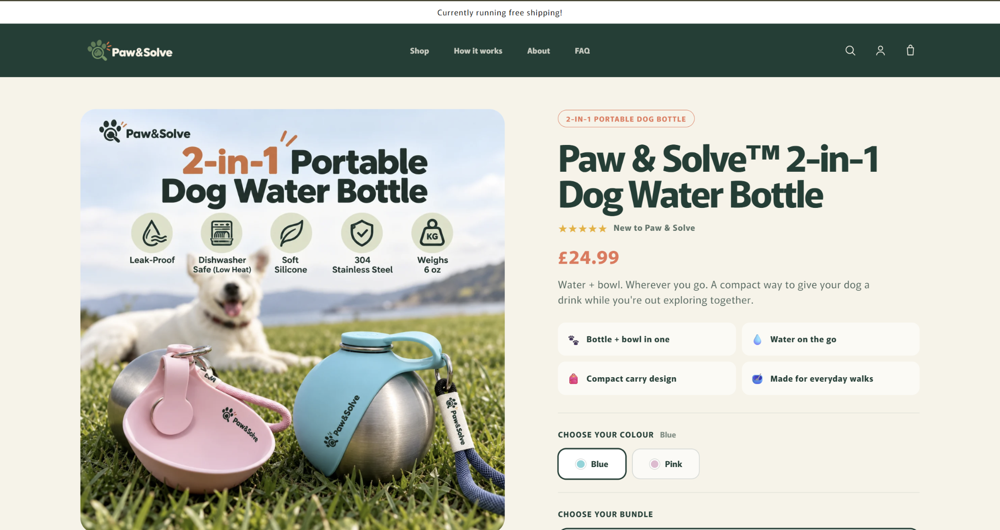

01 / 03
LIVE PROJECT
Paw & Solve
E-commerce Brand
UX/UI Design · Shopify Development · Branding
View Project →
ABOUT ME
Hi, I'm Jack — a UX designer, web developer and marketing strategist currently living in Japan. I help businesses create modern websites, improve their online presence and turn more visitors into customers.
Get in Touch →Modern, fast and user-friendly websites built around real business goals.
Helping businesses improve search visibility and reach more customers.
Clear, thoughtful experiences designed to make websites easier to use and convert.
CREDENTIALS & CAPABILITIES
Level 5 Diploma in UX Design. Research-led interfaces built around users and business goals.
Responsive front-end experiences and e-commerce implementation across modern web platforms.
On-page, technical and local SEO thinking designed to improve discoverability.
Content, positioning and conversion strategy that connects design to commercial outcomes.
SELECTED WORK
CONTACT
Tell me about your business, your current website and what you'd like to improve.
Jackmoxey.jp@gmail.com ↗